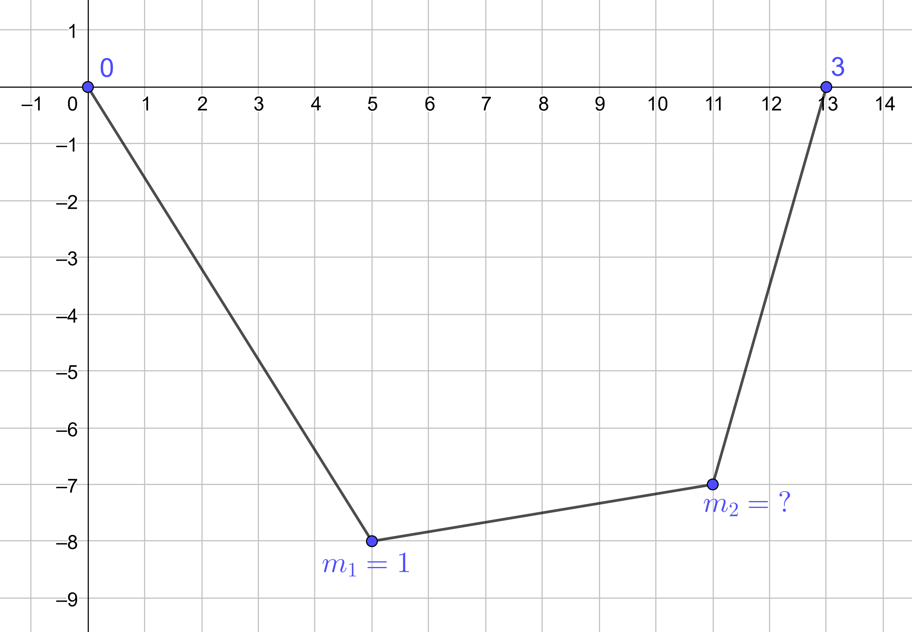
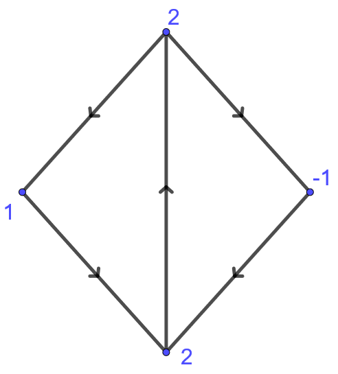
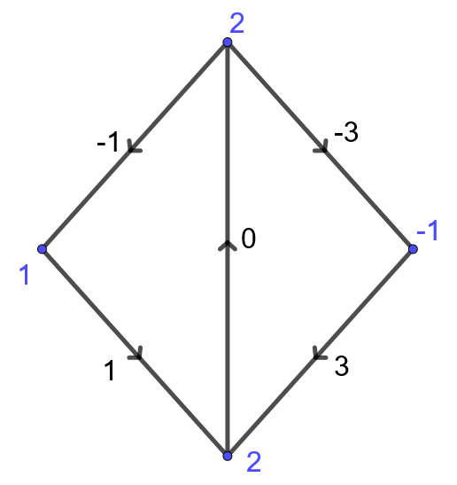
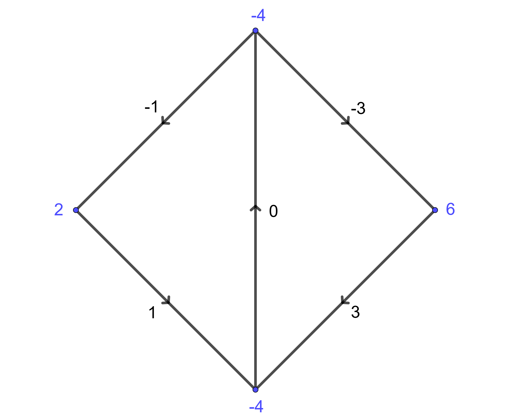
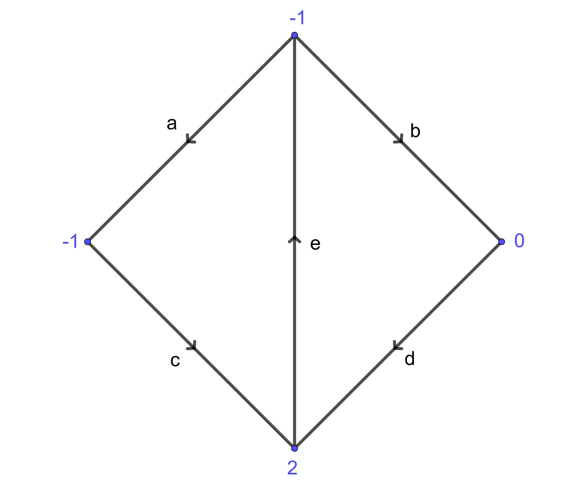
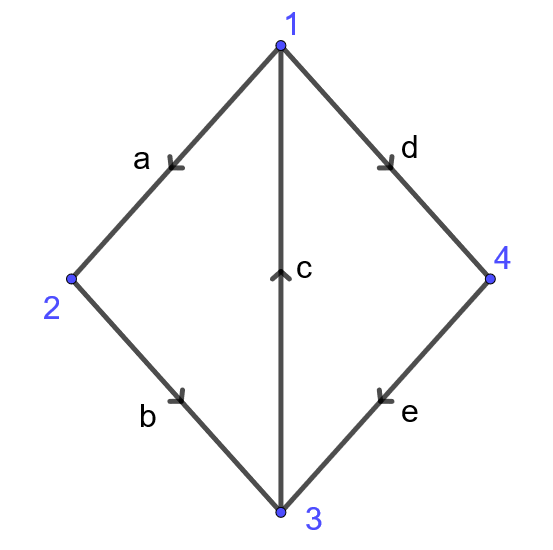
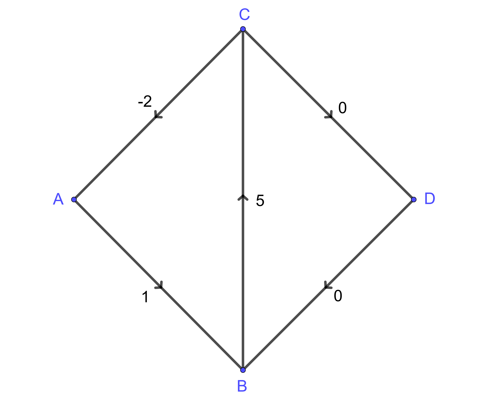
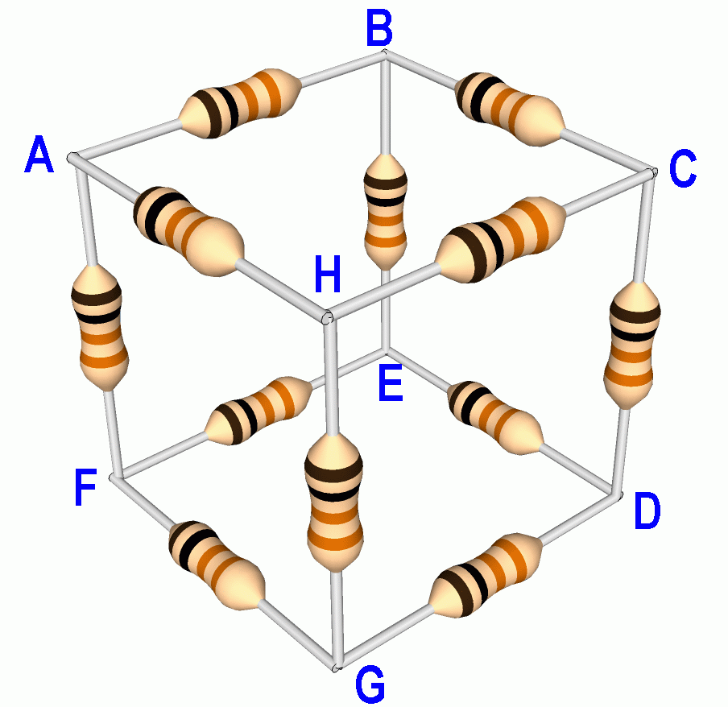
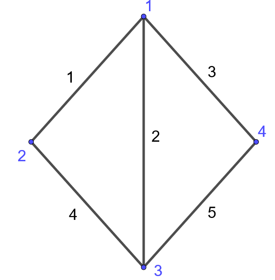

Capítulo 2 Cálculo discreto
Una grafo dirigido \(G = (V,E)\) consiste de un conjunto de vértices \(V\), también llamados nodos, y un conjunto de aristas \(E \subseteq V^2\), es decir pares ordenados de \(V\).
Dado \(e = (a,b)\in E\), denotamos por \(e_-=a\) y \(e_+=b\) los nodos de partida y llegada de \(e\) respectivamente y decimos que \(e\) está orientado del nodo de salida \(a\) al nodo de llegada \(b\).
En general trabajaremos con grafos con aristas simples, es decir que a lo sumo existe una arista que conecta dos vértices en cualquier orientación. Sin embargo, cuando \(e=(a,b)\in E\) podríamos hacer referencia a la arista \(-e:=(b,a)\) como la arista \(e\) pero con el sentido opuesto. Denotaremos \(-E = \{-e \in V^2:e\in E\}\).
Finalmente, podemos considerar también conjuntos de aristas no orientadas en cuyo caso decimos que el grafo es no dirigido.
Ejercicio 2.1 Dibuja el grafo \(G=(V,E)\) para \[ V = \{1,2,3,a,b,c\}, \qquad E = \{(1,a),(1,b),(1,c),(2,a),(2,b),(2,c),(3,a),(3,b),(3,c)\}. \]
Solución
Las redes eléctricas son uno de los modelos más conocidos que se pueden formular en términos de grafos. Sobre el grafo podemos caracterizar por ejemplo el potencial o voltaje como una función \(u:V\to \mathbb R\) y la corriente como una función \(i:E\to \mathbb R\). Siguiendo un poco la nomenclatura que sugiere este modelo, distinguimos dos tipos de funciones en \(G\):
- Potencial: Es una función sobre el conjunto de vértices \(u: V \to \mathbb R\).
- Flujo: Es una función sobre el conjunto de aristas \(f: E \to \mathbb R\).
En algunos casos también podríamos considerar que dichas funciones tomen valores en \(\mathbb C\), \(\mathbb R^n\) ó \(\mathbb C^n\).
También denominamos como flujos a funciones que están definidas en \(E\cup -E\), es decir que consideran ambas orientaciones de las aristas. Decimos que \(f:E\cup -E\to\mathbb R\) es par cuando no depende de la orientación \(f(-e) = f(e)\), y decimos que impar si en cambio \(f(-e) = -f(e)\). Una función \(f:E\to\mathbb R\) en un grafo no dirigido es equivalente a una función par en el mismo grafo y con cualquier orientación sobre las aristas.
Ejemplo 2.1 En el modelo de entramados en la sección anterior, el grafo no dirigido \(G=(V,E)\) con \(V = \{0,1,2,3\}\) y \(E=\{\{0,1\},\{1,2\},\{2,3\}\}\) nos proporciona la información sobre cuales nodos están conectados entre si. Las posiciones de los nodos se caracterizan por \(q:V\to \mathbb R^2\) y las longitudes de los enlaces están determinadas por \(\ell:E\to\mathbb R\).

Para modelar las tensiones es conveniente considerar el grafo dirigido \(G=(V,E')\) de alguna forma arbitraria, quizás \(E'=\{(0,1),(1,2),(2,3)\}\). De esta forma contamos con la función par \(\lambda:E'\cup-E'\to\mathbb R\) y la función impar \(T: E'\cup-E' \to \mathbb R^2\) tales que \[ T(e) = \lambda(e)(q(e_+)-q(e_-)) \] es la tensión sobre el nodo \(e_-\) a lo largo de \(e\). A su vez y gracias a la ley de acción y reacción, \(T(-e) = -T(e)\) es la tensión sobre el nodo \(e_+\) a lo largo de \(e\) pero en la orientación opuesta, es decir \(-e\).
Ejemplo 2.2 Un potencial \(u:V\to\mathbb R\) sobre una red de resistencia genera una corriente \(i:E\to \mathbb R\) que modelamos usando la ley de Ohm para una dada resistencia \(R:E\cup -E \to (0,\infty)\) (función par). Esto quiere decir que la corriente \(i(e)\) que atraviesa una arista \(e = (e_-,e_+)\) es proporcional a la diferencia de los potenciales en los extremos de la arista \[ i(e) = \frac{u(e_+) - u(e_-)}{R(e)}, \qquad R(e) >0: \text{ Resistencia.} \]
2.1 Gradiente
Tanto en la construcción de las tensiones \(T\), como en la de la corriente eléctrica \(i\), estamos considerando la variación de una dada función (las posiciones \(q\) ó el potencial \(u\)) a lo largo de una arista dada. Esto es una versión discreta de la derivada direccional. En este caso requerimos que el grafo sea orientado.
Definición 2.1 Dado potencial \(u:V\to\mathbb R\) sobre un grafo dirigido \(G=(V,E)\), definimos el gradiente \(Du: E\cup -E \to \mathbb R\) tal que \[ Du(e) = u(e_{+})-u(e_{-}). \]
En particular, el gradiente es una función impar.
Ejercicio 2.2 Calcula el gradiente de la función dada en los vértices del siguiente grafo

Solución
Ejercicio 2.3 Verifica que el gradiente satisface la identidad de Leibniz \[ D(u_1u_2) = u_1^+ Du_2 + u_2^-Du_1 \] donde \(u^\pm:E\to\mathbb R\) se define a partir de \(u:V\to\mathbb R\) como \(u^\pm(e) = u(e_\pm)\).
Solución
\[ \begin{aligned} D(u_1u_2)(e) &= u_1(e_+)u_2(e_+) - u_1(e_-)u_2(e_-),\\ &= u_1(e_+)u_2(e_+) - u_1(e_+)u_2(e_-) + u_1(e_+)u_2(e_-) - u_1(e_-)u_2(e_-),\\ &= u_1(e_+)(u_2(e_+)-u_2(e_-)) + u_2(e_-)(u_1(e_+)-u_1(e_-)),\\ &= u_1(e_+)Du_2(e) + u_2(e_-)Du_1(e),\\ &= (u_1^+Du_2 + u_2^-Du_1)(e). \end{aligned} \]2.1.1 Ley de ciclos
No toda función (impar) \(f:E\cup -E \to \mathbb R\) es necesariamente un gradiente. Una condición necesaria y suficiente es la ley de ciclos. Para poder enunciar esta ley es conveniente dar algunas definiciones previas para un dado grafo dirigido \(G=(V,E)\).
Definición 2.2 Un camino no orientado es una sucesión de vértices \(x_0,x_1, \dots, x_n \in V\) tal que \((x_j,x_{j+1}) \in E\cup -E\) para todo \(j\in\{0,1,\ldots,(n-1)\}\). Se dice que el camino es un ciclo si además \(x_n=x_0\).
Definición 2.3 Una componente conexa de \(G\) es un subconjunto \(V'\subseteq V\) tal que:
Todos los vértices en \(V'\) están conectados entre si por algún camino.
Ningún vértice de \(V'\) está conectado con ningún vértice de \(V\setminus V'\).
Decimos que \(G\) es conexo si tiene una única componente conexa.
Teorema 2.1 (Ley de ciclos) Sea \(G=(V,E)\) un grafo dirigido finito. Una función impar \(f:E\cup -E\to\mathbb R\) es igual al gradiente de una función \(u:V\to \mathbb R\) si y solo si para todo ciclo \(x_0,x_1, \dots, x_n=x_0\) se tiene que \[ \sum_{j=0}^{n-1} f(x_j,x_{j+1}) = 0. \]
Demostración. Por un lado es fácil verificar la identidad para flujos gradientes usando la propiedad telescópica. Dado un ciclo \(x_0,x_1, \dots, x_n=x_0\) \[ \sum_{j=0}^{n-1} Du(x_j,x_{j+1}) = \sum_{j=0}^{n-1} (u(x_{j+1})-u(x_j)) = u(x_n)-u(x_0)=0. \]
Podemos construir \(u:V'\to \mathbb R\) sobre cada una de las componentes conexas de \(G\) de la siguiente forma: Fijemos \(x_0 \in V'\) y definimos \[ u(x) := \sum_{j=0}^{n-1} f(x_j,x_{j+1}) \] donde \(x_0,x_1, \dots, x_n=x\) es un camino no orientado que conecta \(x_0\) con \(x\in V'\).
La hipótesis dada por la ley de ciclos garantiza que esta construcción no depende del camino escogido, es decir que está bien definida sin posible ambigüedad: Dados dos caminos \(x_0,\ldots,x_n=x\) y \(y_0=x_0,\ldots,y_m=x\) se tiene que \(z_0=x_0,\ldots,z_n=x_n,z_{n+1}=y_{m-1},\ldots,z_{n+m}=y_0\) es un ciclo y por lo tanto \[ 0 = \sum_{j=0}^{n+m-1} f(z_j,z_{j+1}) = \sum_{j=0}^{n-1} f(x_j,x_{j+1}) - \sum_{j=0}^{m-1} f(y_j,y_{j+1}). \]
Veamos finalmente que \(Du = f\). Dado \(e\in E\) con \(e_\pm\) en la misma componente que \(x_0\), tomamos un camino \(x_0,x_1,\ldots, x_n=e_-\) de \(x_0\) a \(e_-\) y luego añadimos \(x_{n+1}=e_+\) para formar un camino de \(x_0\) a \(e_+\). Por lo tanto \[ Du(e) = u(e_+)-u(e_-) = \sum_{j=0}^{n} f(x_j,x_{j+1})-\sum_{j=0}^{n-1} f(x_j,x_{j+1}) = f(e), \] con lo cual concluímos la demostración.
Este argumento nos permite apreciar que \(u\) está únicamente determinado salvo potenciales constantes en cada componente conexa de \(G\). Las constantes son los valores arbitrarios que daríamos a \(u\) sobre el nodo \(x_0\), que en nuestra demostración fue cero. En otras palabras, la nulidad del gradiente captura el número de componentes conexas del grafo.
Ejercicio 2.4 Calcula los potenciales que generan el flujo dado en la siguiente figura

Solución
El flujo satisface la ley de ciclos. Por ejemplo en el triángulo de la izquierda la suma correspondiente es \(-3+1+2=0\) y de igual forma podemos verificar en el triángulo de la derecha (\(2+(-1)+(-1)=0\)) o en el cuadrado exterior (\((-3)+1-(-1)-(-1)=0\)). Si tomamos \(u(A)=0\) sin pérdida de generalidad tenemos que \[ \begin{cases} u(B) = 1 + u(A) = 1,\\ u(C) = 3 + u(A) = 3,\\ u(D) = -1 + u(C) = 2. \end{cases} \] Verificamos además que con estos valores se obtiene el gradiente prescrito \[ \begin{cases} Du(AB) = u(B)-u(A) = 1-0 = 1,\\ Du(BC) = u(C)-u(B) = 3-1 = 2,\\ Du(CA) = u(A)-u(C) = 0-3 = -3,\\ Du(CD) = u(D)-u(C) = 2-3 = -1,\\ Du(DB) = u(B)-u(D) = 1-2 = -1. \end{cases} \] En general, \(u\) tiene el gradiente prescrito si y solo si \[ u(A) = C, \qquad u(B) = 1+C, \qquad u(C) = 3+C, \qquad u(D)=2+C. \]Margen de cálculo: El lema de Poincaré
Como ya el lector habrá notado, estas construcciones y propiedades encuentran paralelos en cálculo multivariable, y de hecho las demostraciones reproducen las mismas ideas: Los caminos son curvas, los ciclos son lazos o curvas cerradas y la expresión \(\sum_{j=0}^{n-1} f(x_j,x_{j+1})\) es análoga a la integral de línea o el trabajo de un campo vectorial sobre una curva.
El resultado que acabamos de enunciar se conoce como el Lema de Poincaré global. Recordemos su enunciado junto con el resultado local.
Lema de Poincaré (global): Un campo vectorial \(f \in C(\Omega\subseteq\mathbb R^n\to\mathbb R^n)\) es el gradiente de algún potencial \(u\in C^1(\Omega\to\mathbb R)\) si y sólo si para cualquier curva cerrada \(\gamma \in C^1([a,b]\to\Omega)\) (i.e. \(\gamma(b)=\gamma(a)\)) se tiene que el trabajo que ejerce \(f\) sobre la curva \(\gamma\) se anula \[ \int_\gamma f = \int_a^b f(\gamma(t))\cdot \gamma'(t)dt = 0. \]
Lema de Poincaré (local): Si \(\Omega\subseteq\mathbb R^n\) es simplemente conexo2 entonces \(f \in C^1(\Omega\to\mathbb R^n)\) es un gradiente si y solo si \(\partial_if_j = \partial_jf_i\).2.2 Divergencia
Otro operador diferencial que tiene su análogo en grafos es la divergencia. Heurísticamente, la divergencia de un campo vectorial mide cuando es positiva la cantidad de flujo que sale o diverge del nodo dado, mientras que cuando es negativa mide la cantidad de flujo que recibe o converge en el nodo.
Definición 2.4 Dado \(f: E \to \mathbb R\) denotamos por \(\operatorname{div} f:V\to \mathbb R\) a la divergencia de \(f\) donde \[ \operatorname{div} f(v) = \sum_{e_-=v}f(e)-\sum_{e_+=v}f(e) \]
Ejemplo 2.3 En la siguiente figura se calculó la divergencia de la función dada en las aristas

Ejemplo 2.4 Las ecuaciones de balance para un entramado se escriben en términos de la divergencia de las tensiones sobre los nodos libres como \[ \operatorname{div} T = mge_y \]
Ejemplo 2.5 La ley de Kirchhoff dice que en en un nodo que no está conectado a la batería, la corriente que entra y sale de este son iguales. En términos de la divergencia quiere decir que \[ \operatorname{div} i = 0 \]
2.2.1 Fórmula de la divergencia
Al igual que antes, podríamos preguntarnos si todo potencial es la divergencia de algún campo. Esto no es necesariamente cierto, la divergencia satisface la ley de conservación, análoga al teorema de la divergencia. Un caso particular ilustrativo de esta ley postula que la suma de la divergencia sobre un grafo finito es igual a cero \[ \sum_{v\in V} \operatorname{div} f(v) = 0. \] Una vez más la justificación se basa en una propiedad telescópica para la suma: Cada arista aparece dos veces en la suma con signos opuestos dependiendo si se considera su vértice origen o de llegada.
Para dar una versión discreta del teorema de la divergencia consideramos el campo normal exterior \(n_\Omega:E\to \mathbb R\) tal que \[ n_\Omega(e) = \begin{cases} +1 \text{ si $e_-\in \Omega$ y $e_+\in V\setminus \Omega$},\\ -1 \text{ si $e_-\in V\setminus \Omega$ y $e_+\in \Omega$},\\ 0 \text{ en cualquier otro caso} \end{cases} \] en este caso el signo de \(n_\Omega(e)\) indica cuando la arista orientada conecta a \(\Omega\) con su complemento o viceversa.
Ejercicio 2.5 El campo normal es el gradiente de una dada función ¿Cuál?.
Solución
\(n_\Omega = D1_{V\setminus \Omega}\) donde \[ 1_{V\setminus \Omega}(x) = \begin{cases} 1 \text{ si } x\in V\setminus \Omega,\\ 0 \text{ en cualquier otro caso}. \end{cases} \]Teorema 2.2 (Fórmula de la divergencia) Sea \(G=(V,E)\) un grafo dirigido finito y \(\Omega \subseteq V\). La divergencia de \(f:E\to \mathbb R\) verifica \[\begin{equation} \sum_{v\in \Omega} \operatorname{div} f(v) = \sum_{e\in E} f(e)n_\Omega(e) \tag{2.1} \end{equation}\]
De hecho la suma en el lado derecho ocurre en realidad sobre un subconjunto de aristas que podemos definir como el borde de \(\partial\Omega\) \[ \partial \Omega := \{e\in E\ | \ \{e_+,e_-\} \cap \Omega \neq \emptyset \text{ y } \{e_+,e_-\} \cap V\setminus \Omega \neq \emptyset\}. \] Es decir las aristas que conectan \(\Omega\) con su complemento en cualquier orientación.
La cantidad \(f(e)n_\Omega(e)\) es positiva cuando \(e_-\in \Omega\), \(e_+\in V\setminus \Omega\) y \(f(e)>0\); o bien cuando \(e_-\in V\setminus \Omega\), \(e_+\in \Omega\) y \(f(e)<0\). En cualquier caso, \(f(e)n_\Omega(e)\) se interpreta como el flujo que escapa de \(\Omega\) por medio de \(e\). Un razonamiento similar se dá cuando \(f(e)n_\Omega(e)\) es negativo para el flujo que entra. El balance total nos dice que la masa que se produce o absorbe en \(\Omega\) se puede medir de dos formas, sumando las divergencias en \(\Omega\) u observando las contribuciones que escapan o entran por las aristas que conectan a \(\Omega\) con su complemento \(V\setminus \Omega\) en cualquier orientación.
Demostración. Sean \(1_\pm:V\times E\to \mathbb R\) definidas según \[ 1_\pm(v,e) := \begin{cases} 1 \text{ si } e_\pm = v,\\ 0 \text{ en cualquier otro caso}. \end{cases} \] En particular usaremos que \[ \sum_{v\in \Omega} 1_\pm(v,e) = \begin{cases} 1 \text{ si } e_\pm \in \Omega,\\ 0 \text{ en cualquier otro caso} \end{cases} \]
Tenemos así que \[ \begin{aligned} \sum_{v\in \Omega} \operatorname{div} f(v) &= \sum_{v\in \Omega} \sum_{e_-=v} f(e) - \sum_{v\in \Omega} \sum_{e_+=v} f(e),\\ &= \sum_{v\in \Omega} \sum_{e \in E} f(e)1_-(v,e) - \sum_{v\in \Omega} \sum_{e \in E} f(e)1_+(v,e),\\ &= \sum_{e \in E} \sum_{v\in \Omega}f(e)1_-(v,e) - \sum_{e \in E} \sum_{v\in \Omega}f(e)1_+(v,e),\\ &= \sum_{e_-\in \Omega} f(e) -\sum_{e_+\in \Omega} f(e),\\ &= \sum_{\substack{e_-\in \Omega\\e_+\in V\setminus \Omega}} f(e) + \sum_{e_-, e_+\in \Omega} f(e) - \sum_{\substack{e_+\in \Omega\\e_-\in V\setminus \Omega}} f(e) - \sum_{e_-, e_+\in \Omega} f(e),\\ &= \sum_{\substack{e_-\in \Omega\\e_+\in V\setminus \Omega}} f(e) - \sum_{\substack{e_+\in \Omega\\e_-\in V\setminus \Omega}} f(e) \end{aligned} \]
Esta última expresión es por definición de \(n_\Omega\) igual a \[ \sum_{e\in E} f(e)n_\Omega(e), \] con lo cual se concluye la demostración.
Margen de cálculo: El teorema de la divergencia
El teorema de la divergencia nos dice que dado un subconjunto \(\Omega \subset\mathbb R^n\) con frontera localmente de clase \(C^1\) a trozos, y campo \(v\in C^1(\overline{\Omega}\to\mathbb R^n)\), entonces \[ \int_\Omega \operatorname{div} v = \int_{\partial \Omega} v\cdot n \] donde \(n\) es el vector normal exterior a \(\Omega\).
El lado derecho integra el flujo que escapa o entra en \(\Omega\) a través de su borde. En concreto, si en un punto dado del borde \(v\cdot n >0\) entonces \(v\) apunta en la dirección de \(n\) y el flujo escapa con una tasa igual a \(v\cdot n\), si en cambio \(v\cdot n < 0\) el flujo estaría entrando, y si \(v\cdot n=0\) se tiene que \(v\) es tangente y el flujo apenas roza la superficie. El lado izquierdo de la expresión es una integral sobre \(\Omega\) que representa la producción/absorción de flujo por el campo \(v\).2.2.2 Lema de Poincaré para la divergencia
Teorema 2.3 Sea \(G=(V,E)\) un grafo dirigido finito y conexo. Para cualquier \(\mu:V\to\mathbb R\) tal que \[ \sum_{x\in V}\mu(x)=0 \] existe por lo menos una solución \(f:E\to\mathbb R\) de \[ \operatorname{div} f = \mu. \]
Demostración. Tomemos un nodo arbitrario \(x_0\in V\) y consideremos inductivamente caminos no orientados que vayan conectando a \(x_0\) con cada uno de los nodos restantes y de tal forma que nunca se formen ciclos en esta construcción. Es decir, estamos proponiendo un árbol generador del grafo con raíz en el nodo \(x_0\)3. Denotaremos dicho árbol por \(T_0=(V_0=V,E_0)\). Fijamos \(f=0\) en las aristas de \(E\setminus E_0\) y en los demás ajustaremos \(f\) para que satisfaga la ecuación dada.
En la siguiente construcción estaremos definiendo a \(f:E\cup-E\to \mathbb R\) como una función impar.
La idea consiste en ir podando las ramas del árbol a medida que asignamos \(f\) convenientemente. Si \(|V_0|=1\) el problema sería trivial, asumamos así que \(|V_0|>1\). En el primer paso tomamos una hoja de \(T_0\), es decir un \(x\in V_0\) con un único nodo \(y \sim_{T_0} x\). Declaramos así \(f(x,y) = \mu(x)\) de modo que se tiene que \(\operatorname{div}f(x) = \mu(x)\). Una vez declarado \(f\) en la arista \(e=(x,y)\) procedemos a considerar el árbol \(T_1 = (V_0\setminus \{x\},E_1:=E_0\setminus \{(x,y),(y,x)\})\).
Asumamos de forma inductiva que luego de \(k\) pasos contamos con los árboles \[ T_k = (V_k,E_k) \subset T_{k-1} := (V_{k-1},E_{k-1}) \subset \ldots \subset T_0 \] tales que \(f\) ha sido definida en \(E\setminus E_k\) tal que \(\operatorname{div}f=\mu\) se satisface sobre \(V\setminus V_k\). Para el siguiente paso tomamos una hoja \(x \in V_k\) y fijamos \(f\) sobre la (única) arista \((x,y) \in E_k\cup-E_k\) de modo que la ecuación ahora se satisfaga sobre el nodo \(x\). Para el siguiente paso podamos a \(x\) de \(T_k\), es decir que \[ T_{k+1}:= (V_{k+1}=V_k\setminus\{x\},E_{k+1}:=E_k\setminus\{(x,y),(y,x)\}). \] Claramente esta construcción garantiza que las hipótesis inductivas se siguen cumpliendo en el siguiente paso.
Una vez terminado este algoritmo garantizamos que \(\operatorname{div} f=\mu\) se cumple en \(V\setminus \{x_0\}\) (la raíz del árbol). Como última observación tenemos que la ecuación también debe cumplirse en \(x_0\) gracias a que \(\sum_{x\in V} \operatorname{div} f(x)=\sum_{x\in V} \mu(x)=0\).
Notemos que si \(x_0,\ldots,x_k=x_0\) es un dado ciclo del grafo, entonces si tomamos \(f=1\) en las aristas del ciclo y cero por fuera de estas, obtenemos una solución de \(\operatorname{div} f=0\). De hecho, todas las soluciones homogéneas se obtienen por superposiciones de este ejemplo. El núcleo de la divergencia es un espacio vectorial generado por los ciclos independientes del grafo y su dimensión es un importante invariante topológico conocido como el primer número de Betti.
Ejercicio 2.6 Calcula los flujos \(f:E\to \mathbb R\) tal que \(\operatorname{div} f=\mu\) para la función \(\mu\) dada sobre los nodos del siguiente grafo.

Solución
Verificamos primero que la suma de los valores en los nodos se anula.
Para calcular una solución particular tomamos el árbol generador con aristas \(a\), \(b\), \(-e\) y definimos así \[ f(c)=f(d)=0, \qquad f(a)=1, \qquad f(e)=2, \qquad f(b)=0 \] el cual verifica fácilmente la ecuación de divergencia esperada en todos los nodos.
Cualquier otra solución se obtiene como la superposición de la solución previa con las del sistema homogéneo \[ \begin{cases} f(a)+f(b)-f(e)=0,\\ -f(a)+f(c)=0,\\ -f(b)+f(d)=0,\\ -f(c)-f(d)+f(e)=0. \end{cases} \] Dos soluciones linealmente independientes se obtienen por ejemplo de los ciclos \(a,c,e\) y \(b,d,e\) respectivamente \[ \begin{aligned} &f(a)=f(c)=f(e)=1,\qquad f(b)=f(d)=0,\\ &f(a)=f(c)=0, \qquad f(b)=f(d)=f(e)=1. \end{aligned} \] Si usamos la reducción de Gauss-Jordan podemos verificar que esta es además una base de las soluciones homogéneas.Ejercicio 2.7 El primer número de Betti de \(G=(V,E)\) es igual a \(|E|-|V|+C\) donde \(C\) es el número de componentes conexas.
Solución
Asumamos sin pérdida de generalidad que \(G\) es conexo, es decir \(C=1\), y en el caso general podemos aplicar el siguiente razonamiento a cada componente conexa de \(G\).
Un árbol generador \(T=(V,E_0)\) de \(G\) tiene \(|V|-1\) aristas. Por definición, cualquier arista en \(E\setminus E_0\) cierra un ciclo en \(G\) y genera las soluciones triviales del problema \(\operatorname{div} f=0\).2.3 Integración por partes
En esta sección identificamos a las funciones \(u:V\to \mathbb R\) con vectores de \(\mathbb R^{|V|}\). Igualmente identificamos a las funciones \(f:E\to \mathbb R\) con vectores de \(\mathbb R^{|E|}\). Eventualmente también podríamos considerar funciones complejas.
El gradiente \(D:\mathbb R^{|V|}\to\mathbb R^{|E|}\) se representa así por la matriz \((D_{e,x}) \in \mathbb R^{|E|\times |V|}\) tal que \[ D_{e,x} = \begin{cases} 1 \text{ si } x=e_+,\\ -1 \text{ si } x=e_-,\\ 0 \text{ en cualquier otro caso}. \end{cases} \] Mientras que la divergencia \(\operatorname{div}:\mathbb R^{|E|}\to\mathbb R^{|V|}\) se representa por la matriz \((\operatorname{div}_{x,e}) \in \mathbb R^{|V|\times |E|}\) tal que \[ \operatorname{div}_{x,e} = \begin{cases} -1 \text{ si } e_+=x,\\ 1 \text{ si } e_-=x,\\ 0 \text{ en cualquier otro caso}. \end{cases} \] Descubrimos de esta forma que \(D^T = -\operatorname{div}\) o equivalentemente la fórmula de integración por partes \[ \sum_{e\in E} (fDu)(e) = f\cdot Du = -u\cdot \operatorname{div} f = -\sum_{x\in V} (u\operatorname{div} f)(x). \]
Ejercicio 2.8 Calcula las matrices asociadas con el gradiente y la divergencia para el siguiente grafo

Solución
\[ D = \begin{pmatrix} -1 & 1 & 0 & 0\\ 0 & -1 & 1 & 0\\ 1 & 0 & -1 & 0\\ -1 & 0 & 0 & 1\\ 0 & 0 & 1 & -1 \end{pmatrix} \qquad \operatorname{div} = -D^T = \begin{pmatrix} 1 & 0 & -1 & 1 & 0\\ -1 & 1 & 0 & 0 & 0\\ 0 & -1 & 1 & 0 & -1\\ 0 & 0 & 0 & -1 & 1 \end{pmatrix}. \]Ejercicio 2.9 Demuestra la fórmula de integración por partes sobre un dominio \(\Omega \subseteq V\) \[\begin{equation} \sum_{\Omega} u\operatorname{div}f = \sum_{E} u^-fn_\Omega - \sum_{e_+\in \Omega} fDu. \tag{2.2} \end{equation}\] En particular, si \(u=1\) recuperamos la fórmula de la divergencia (2.1).
Solución
Basta con usar que \(Dv\cdot f = - v\cdot \operatorname{div} f\) para \(v := u 1_{\Omega}\).Margen de cálculo: Integración por partes en \(\mathbb R^n\)
La fórmula de integración por partes nos dice que dado un subconjunto \(\Omega \subset\mathbb R^n\) con frontera localmente de clase \(C^1\) a trozos, un campo vectorial \(v\in C^1(\overline{\Omega}\to\mathbb R^n)\), y un campo escalar \(u\in C^1(\overline{\Omega}\to\mathbb R^n)\) entonces \[ \int_\Omega u \operatorname{div} v = \int_{\partial \Omega} u (v\cdot n) - \int_\Omega Du\cdot v \] donde \(n\) es el vector normal exterior a \(\Omega\).2.3.1 Descomposición de Helmholtz
La relación \(D^T=-\operatorname{div}\) nos permite dar la descomposición ortogonal \[ \mathbb R^{|E|} = D(\mathbb R^{|V|}) + \ker(\operatorname{div}). \] también conocida como la descomposición de Helmholtz. Es decir que cualquier \(f:E\to\mathbb R\) puede escribirse de forma única4 como \[ f = Du + g \] tal que \[ \operatorname{div} g = 0, \] y como corolario \(Du \perp g\).
En términos físicos, cualquier flujo se descompone en una parte que preserva la masa (\(g\)) y en un flujo gradiente (\(Du\)).
Margen de álgebra lineal: El teorema fundamental de álgebra lineal
Dado \(A:\mathbb R^M\to \mathbb R^{N}\) se tiene que \[ A(\mathbb R^{M})^\perp = \ker(A^T). \] Si \(x \perp A(\mathbb R^M)\) entonces \(0 = x\cdot AA^Tx = \|A^T x\|^2\), lo cual implica \(A^Tx=0\). Por otro lado si \(A^Tx=0\) entonces para \(y\in \mathbb R^M\) arbitrario \(x\cdot Ay = A^Tx\cdot y=0\).Ejercicio 2.10 Calcula la descomposición de Helmholtz para el siguiente flujo

Solución
Sea \(f:E\to \mathbb R\) los valores que se muestran en la gráfica. Buscamos calcular \(u:V\to \mathbb R\) y \(g:E\to \mathbb R\) tales que \(f=Du+g\) y \(\operatorname{div}g=0\). Si tomamos así la divergencia en la expresión \(f=Du+g\) encontramos que \(u\) satisface \[ \begin{cases} -2u(A)+u(B)+u(C)=3,\\ u(A)-3u(B)+u(C)+u(D)=4,\\ u(A)+u(B)-3u(C)+u(D)=-7,\\ u(B)+u(C)-2u(D)=0. \end{cases} \] Las soluciones homogéneas del sistema son los potenciales constantes5. Ajustando esta constante de forma que \(u(A)=0\) obtenemos un sistema que podemos resolver numéricamente
import numpy as np
A = np.array([[ 1, 1, 0],
[-3, 1, 1],
[ 1,-3, 1]])
B = np.array([3, 4, -7])
X = np.linalg.inv(A).dot(B)
Du = [X[0],X[1]-X[0],-X[1],X[2]-X[1],X[0]-X[2]]
f = np.array([1,5,-2,0,0])
g = f-Du
print("[Du(AB), Du(BC), Du(CA), Du(CD), Du(DB)] = {}.".format(Du))## [Du(AB), Du(BC), Du(CA), Du(CD), Du(DB)] = [0.125, 2.75, -2.875, -1.375, -1.375].print("[g(AB), g(BC), g(CA), g(CD), g(DB)] = {}.".format(g))## [g(AB), g(BC), g(CA), g(CD), g(DB)] = [0.875 2.25 0.875 1.375 1.375].2.4 Laplaciano
El Laplaciano es un operador diferencial que se construye aplicando sucesivamente el gradiente y la divergencia. Es decir que mide la producción de masa del gradiente. Además, luego de una manipulación algebraica, observamos que es proporcional a la diferencia entre el promedio en los vértices adyacentes y el valor en el centro.
Definición 2.5 Dado \(u: V \to \mathbb R\), el Laplaciano \(\Delta u: V \to \mathbb R\) se define tal que \[ \Delta u(v) = \operatorname{div}(D u)(v) = \sum_{w \sim v} (u(w)-u(v)). \] donde \(w \sim v\) si existe una arista que une a \(v\) y \(w\) en cualquier orientación.
A pesar de que tanto el gradiente como la divergencia requieren que el grafo tenga una orientación, el Laplaciano está bien definido en grafos no dirigidos.
Cuando \(u: V \to \mathbb R\) es un potencial tal que \(\Delta u=0\) en \(\Omega \subseteq V\), decimos que \(u\) es una función armónica sobre \(\Omega\).
Ejemplo 2.6 Considera una red eléctrica con resistencias de un Ohm (\(R(e)=1\)) la cual modelamos como una grafo dirigido de forma arbitraria. Una batería de un voltio entre dos nodos \(v_+,v_-\in V\) genera un potencial eléctrico \(u:V\to \mathbb R\) que se puede determinar a partir de la ley de Ohm y la ley de Kirchhoff.
Según la ley de Ohm tenemos que la corriente se calcula según \[ i=Du. \]
Según la ley de Kirchhoff tenemos que fuera de los nodos donde se conecta la bateria, la corriente se conserva, es decir \[ 0=\operatorname{div}i = \Delta u \text{ en } V\setminus\{v_\pm\} \]
Junto con las condiciones de borde en los nodos donde se conecta la batería \[ \qquad u(v_+) = 1, \qquad u(v_-) = 0, \] obtenemos un sistema de ecuaciones lineales con igual número de ecuaciones que de incógnitas.
Ejercicio 2.11 Calcula el potencial eléctrico que se genera en un cubo de resistencias de un Ohm, cuando se conecta una batería de un voltio entre dos nodos opuestos del cubo

Solución
Asumamos sin pérdida de generalidad que se conecta la bateria de los nodos \(A\) a \(D\) tal que \(v(A)=1\) y \(v(D)=0\). Tenemos un sistema de ecuaciones lineales de dimensiones 6 por 6. De existir una única solución6 observamos que por simetría se debe cumplir que \(v(B)=v(F)=v(H)=\alpha\) (los nodos adyacentes a \(A\)) y \(v(C)=v(E)=v(G)=\beta\) (los nodos adyacentes a \(E\)). Esto reduce el sistema a uno de 2 por 2 \[ \begin{cases} -9\alpha+6\beta = -3,\\ 6\alpha -9\beta = 0 \end{cases} \qquad\Rightarrow\qquad \alpha = \frac{3}{5}, \qquad \beta = \frac{2}{5}. \] Finalmente es inmediato verificar que con estos valores se obtiene una solución satisfactoria. Más adelante veremos que las soluciones de estos sistemas siempre son únicas (inyectividad del Laplaciano).Ejercicio 2.12 Calcula la matriz asociada al Laplaciano para el grafo a continuación
Solución
\[ \Delta = \operatorname{div} D = \begin{pmatrix} 1 & 0 & -1 & 1 & 0\\ -1 & 1 & 0 & 0 & 0\\ 0 & -1 & 1 & 0 & -1\\ 0 & 0 & 0 & -1 & 1 \end{pmatrix}\begin{pmatrix} -1 & 1 & 0 & 0\\ 0 & -1 & 1 & 0\\ 1 & 0 & -1 & 0\\ -1 & 0 & 0 & 1\\ 0 & 0 & 1 & -1 \end{pmatrix} = \begin{pmatrix} -3 & 1 & 1 & 1\\ 1 & -2 & 1 & 0\\ 1 & 1& -3 & 1\\ 1 & 0 & 1 & -2 \end{pmatrix} \]Ejercicio 2.13 Da un análogo discreto para la fórmula de Green \[ \int_\Omega (u_1\Delta u_2 - u_2\Delta u_1) = \int_{\partial\Omega} (u_1Du_2 - u_2 Du_1)\cdot n \]
Solución
De la fórmula de integración por partes (2.2) \[ \sum_\Omega u_i \Delta u_j = \sum_{E} u_i^- Du_j n_\Omega - \sum_{e_+\in \Omega} Du_iDu_j \] Por lo tanto al tomar la resta se cancelan el segundo término a la deracha quedando así \[ \sum_\Omega (u_1 \Delta u_2-u_2 \Delta u_1) = \sum_{E} (u_1^- Du_2 - u_2^- Du_1)n_\Omega. \]En general podemos añadir una operación intermedia entre el gradiente y la divergencia. Esto genera operadores con características similares al Laplaciano.
Ejemplo 2.7 Considera ahora una red eléctrica con resistencias variables. La ley de Ohm consiste en tomar el gradiente del potencial y luego dividir por las resistencias para obtener la corriente. Al recíproco de la resistencia también se le conoce como la capacitancia y puede ser más conveniente de usar en este ejemplo. En este caso las ecuaciones de balance para el potencial eléctrico tienen la forma \[ \operatorname{div} (CDu) = 0 \qquad C = 1/R : \text{Capacitancia} \] (fuera de los nodos donde se conecta la batería).
En el caso particular de las resistencias dadas en la siguiente gráfica,

obtenemos el operador lineal asociado a la siguiente matriz
import numpy as np
# Gradiente
D = np.array([[-1, 1, 0, 0],
[0, -1, 1, 0],
[1, 0, -1, 0],
[-1, 0, 0, 1],
[0, 0, 1, -1]])
# Capacitancia (C=1/R)
C = np.array([[1, 0, 0, 0, 0],
[0, 1/4, 0, 0, 0],
[0, 0, 1/2, 0, 0],
[0, 0, 0, 1/5, 0],
[0, 0, 0, 0, 1/3]])
# Operador L = div(CD)
L = -np.matmul(D.T,np.matmul(C,D))
print(L)## [[-1.7 1. 0.5 0.2 ]
## [ 1. -1.25 0.25 -0. ]
## [ 0.5 0.25 -1.08333333 0.33333333]
## [ 0.2 -0. 0.33333333 -0.53333333]]Ejemplo 2.8 Las ecuaciones de balance en los entramados se implementan en tres pasos:
Se toman las posiciones relativas entre nodos adyacentes, es decir el gradiente de las posiciones \(q:V\to\mathbb R^2\).
Se forman las tensiones a partir de las posiciones relativas y los multiplicadores \(\lambda:E\to \mathbb R\).
Se propone el balance de fuerzas en términos de la divergencia de la tensión.
En síntesis se obtiene que en los nodos libres \[ \operatorname{div} (\lambda D q) = mge_2 \] A diferencia de los problemas de redes eléctricas, tanto \(q\) como \(\lambda\) son variables por ser determinadas lo cual hace que el problema sea no-lineal en dichas incógnitas.
es decir que cualquier ciclo puede ser deformado continuamente a un punto. Por ejemplo, si \(n=2\) dice que \(\Omega\) no tiene hoyos.↩︎
En otras palabras un sub-grafo \(T_0 := (V_0=V,E_0\subseteq E)\) libre de ciclos y conexo↩︎
Dado \(f:E\to \mathbb R\), el potencial \(u\) no es único pero su gradiente \(Du\) sí.↩︎
Esto puede verificarse de la reducción de Gauss-Jordan en este caso, y además será demostrado con mayor generalidad.↩︎
Una vez más, esto puede chequearse a mano o con una herramienta numérica.↩︎